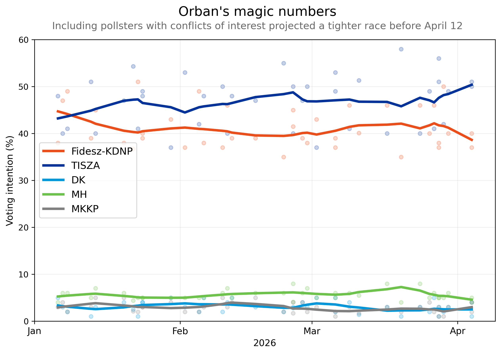

Orbán’s magic numbers
Would Viktor Orbán attempt to shape the outcome of the election in unprecedented ways? Before Hungary’s April 12 election, the question hovered over the race after sixteen years of Orbán in power. Yet he faced the strongest challenge of his political career.
Election night delivered a result far outside the expectations projected by some pollsters. Orbán’s FIDESZ won just 39 percent of the vote, while Péter Magyar’s center-right TISZA party secured more than 52 percent and a commanding parliamentary majority.
The fears of direct election interference quickly faded after the scale of the result became clear. But the campaign left behind important lessons: polling projections varied widely, and some consistently portrayed the race as much tighter than it actually was.
A closer examination of polling data suggests that conflicts of interest and partisan affiliations were not evenly distributed across the polling industry. Some pollsters repeatedly published projections that favored the outgoing FIDESZ government, even though their institutional relationships were often publicly traceable and represented clear conflicts of interest.

On one hand, Orbán’s magic numbers made the race look closer than it actually was. On the other, the conflicts of interest were not exclusive to his party alone. None of this necessarily proves coordinated manipulation. Pollsters can miss predictions for many reasons, from sampling error to turnout modeling.
But when institutional affiliations and political ties are publicly verifiable and represent conflicts of interest, those relationships can also be incorporated into election modeling and public analysis.
The broader question extends beyond Hungary. As elections become more polarized, the line between creating a parallel political reality and actual measurement grows increasingly muddled. Without stronger vetting standards, voters will continue navigating campaigns where the numbers themselves become part of the contest.